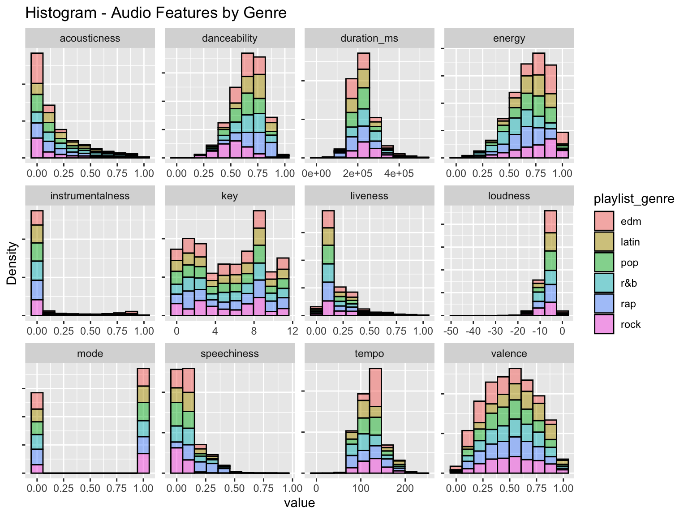

library(tidyverse)
library(ggplot2)
library(tibble)
library(dplyr)
library(cowplot)
library(lubridate)
library(corrplot)
library(gridExtra)
library(rpart)
library(rpart.plot)
library(kableExtra)
# view of data set
spotify_songs <- read.csv("spotify_songs.csv")An Analysis of Music Genre Evolution on Spotify (1957-2020)
“Music expresses that which cannot be put into words and that which cannot remain silent.” - Victor Hugo
Hi there, thanks for being on my website! I haven’t quite had the time to format everything (or, in other words, make everything look pretty) but this is the work I’ve done so far, and the visualisations I’ve attempted to produce. See you next week :-)
Introduction
In the ever-evolving world of music, I embarked on a captivating journey to explore the intricate tapestry of Spotify’s genre classification system. Spanning six decades from 1957 to 2020, this musical time machine allowed me to witness how music genres have not only shaped themselves but have been profoundly influenced by changing industry dynamics and listener preferences.
This exploration became all the more pertinent in the face of a rapidly transforming music landscape. According to the Recording Industry Association of America (2022), the revenues from streaming music have surged, accounting for a staggering 84% of total music revenues in the first half of 2021. Spotify, in particular, has spearheaded this revolution and emerged as the “world’s biggest music streaming provider in terms of global paid-for subscriptions” (Music Business Worldwide, 2023), with projections indicating continued dominance throughout the 2020s (Goldman Sachs, 2023). Concurrently, digital music platforms have ushered in a shift from rigid “hard genre categorisation” to a more fluid “mood-based categorisation” approach, a strategy aimed at promoting new music through effective exposure (The Guardian, 2017).
As such, the examination of the evolution of music genre categorisation on Spotify in response to songs released is not merely an academic exercise; it is a lens through which we gain insights into the dynamic interplay of change and continuity within the music industry. This understanding can guide business strategies and offer valuable insights into the ever-evolving music landscape, especially within our increasingly digitalised society.
‘Tidying’ Data
Overview of the data-set:
Then, to isolate the tracks, genres, and audio features, I created a new data-set for easy viewing. I also created a list of genres and the respective quantity of songs for each.
# view column names
column_names <- data.frame(Variable = names(spotify_songs))
print(column_names) Variable
1 track_id
2 track_name
3 track_artist
4 track_popularity
5 track_album_id
6 track_album_name
7 track_album_release_date
8 playlist_name
9 playlist_id
10 playlist_genre
11 playlist_subgenre
12 danceability
13 energy
14 key
15 loudness
16 mode
17 speechiness
18 acousticness
19 instrumentalness
20 liveness
21 valence
22 tempo
23 duration_ms# new dataset for variables
spotify_genres <- spotify_songs %>%
select(track_name, track_album_release_date, playlist_genre, playlist_subgenre)
# new dataset for features
audio_features <- spotify_songs %>%
select(track_name, track_album_release_date, danceability, energy, key, loudness, mode, speechiness, acousticness, instrumentalness, liveness, valence, tempo, duration_ms)
# what are the individual genres
summary_genres <- spotify_genres %>%
count(playlist_genre)
count <- summary_genres %>%
knitr::kable()[Shiny UI WIP to represent the below data in Tabsets]
Tab 1: Overall Popularity of Each Genre
# overall popularity of each genre
ggplot(summary_genres, aes(x = playlist_genre, y = n, group = 1)) +
geom_point(stat = "identity") +
labs(title = "Popularity of Genres", x = "Playlist Genre", y = "Count (1956 - 2020)")
Counted the quantity and associations of songs with respective subgenres:
# isolate subgenres for edm
filtered_edm <- spotify_genres %>%
select(track_album_release_date, playlist_genre, playlist_subgenre) %>%
filter(playlist_genre == "edm")
edm_subg_count <- table(filtered_edm$playlist_subgenre)
edm_summary <- data.frame(playlist_subgenre = names(edm_subg_count), Count = as.numeric(edm_subg_count)) %>%
mutate(playlist_genre = "edm")
# isolate subgenres for latin
filtered_latin <- spotify_genres %>%
select(track_album_release_date, playlist_genre, playlist_subgenre) %>%
filter(playlist_genre == "latin")
latin_subg_count <- table(filtered_latin$playlist_subgenre)
latin_summary <- data.frame(playlist_subgenre = names(latin_subg_count), Count = as.numeric(latin_subg_count)) %>%
mutate(playlist_genre = "latin")
# isolate subgenres for pop
filtered_pop <- spotify_genres %>%
select(track_album_release_date, playlist_genre, playlist_subgenre) %>%
filter(playlist_genre == "pop")
pop_subg_count <- table(filtered_pop$playlist_subgenre)
pop_summary <- data.frame(playlist_subgenre = names(pop_subg_count), Count = as.numeric(pop_subg_count)) %>%
mutate(playlist_genre = "pop")
# isolate subgenres for r&b
filtered_rnb <- spotify_genres %>%
select(track_album_release_date, playlist_genre, playlist_subgenre) %>%
filter(playlist_genre == "r&b")
rnb_subg_count <- table(filtered_rnb$playlist_subgenre)
rnb_summary <- data.frame(playlist_subgenre = names(rnb_subg_count), Count = as.numeric(rnb_subg_count)) %>%
mutate(playlist_genre = "rnb")
# isolate subgenres for rap
filtered_rap <- spotify_genres %>%
select(track_album_release_date, playlist_genre, playlist_subgenre) %>%
filter(playlist_genre == "rap")
rap_subg_count <- table(filtered_rap$playlist_subgenre)
rap_summary <- data.frame(playlist_subgenre = names(rap_subg_count), Count = as.numeric(rap_subg_count)) %>%
mutate(playlist_genre = "rap")
# isolate subgenres for rock
filtered_rock <- spotify_genres %>%
select(track_album_release_date, playlist_genre, playlist_subgenre) %>%
filter(playlist_genre == "rock")
rock_subg_count <- table(filtered_rock$playlist_subgenre)
rock_summary <- data.frame(playlist_subgenre = names(rock_subg_count), Count = as.numeric(rock_subg_count)) %>%
mutate(playlist_genre = "rock")
# combine the datasets
subgenre_count <- bind_rows(edm_summary, latin_summary, pop_summary, rnb_summary, rap_summary, rock_summary)
subgenre_count playlist_subgenre Count playlist_genre
1 big room 1206 edm
2 electro house 1511 edm
3 pop edm 1517 edm
4 progressive electro house 1809 edm
5 latin hip hop 1656 latin
6 latin pop 1262 latin
7 reggaeton 949 latin
8 tropical 1288 latin
9 dance pop 1298 pop
10 electropop 1408 pop
11 indie poptimism 1672 pop
12 post-teen pop 1129 pop
13 hip pop 1256 rnb
14 neo soul 1637 rnb
15 new jack swing 1133 rnb
16 urban contemporary 1405 rnb
17 gangster rap 1458 rap
18 hip hop 1322 rap
19 southern hip hop 1675 rap
20 trap 1291 rap
21 album rock 1065 rock
22 classic rock 1296 rock
23 hard rock 1485 rock
24 permanent wave 1105 rockTab 2: Popularity of Subgenres within Individual Genres
edm <- ggplot(edm_summary, aes(x = playlist_subgenre, y = Count)) +
geom_point(stat = "identity") +
labs(title = "EDM", x = "Subgenre", y = "Count")
latin <- ggplot(latin_summary, aes(x = playlist_subgenre, y = Count)) +
geom_point(stat = "identity") +
labs(title = "Latin", x = "Subgenre", y = "Count")
pop <- ggplot(pop_summary, aes(x = playlist_subgenre, y = Count)) +
geom_point(stat = "identity") +
labs(title = "Pop", x = "Subgenre", y = "Count")
rnb <- ggplot(rnb_summary, aes(x = playlist_subgenre, y = Count)) +
geom_point(stat = "identity") +
labs(title = "R&B", x = "Subgenre", y = "Count")
rap <- ggplot(rap_summary, aes(x = playlist_subgenre, y = Count)) +
geom_point(stat = "identity") +
labs(title = "Rap", x = "Subgenre", y = "Count")
rock <- ggplot(rock_summary, aes(x = playlist_subgenre, y = Count)) +
geom_point(stat = "identity") +
labs(title = "Rock", x = "Subgenre", y = "Count")
plot_grid(
edm + theme(legend.justification = c(0,1), axis.text.x = element_text(size = 6)),
latin + theme(legend.justification = c(1,0), axis.text.x = element_text(size = 6)),
pop + theme(legend.justification = c(0,1), axis.text.x = element_text(size = 6)),
rnb + theme(legend.justification = c(1,0), axis.text.x = element_text(size = 6)),
rap + theme(legend.justification = c(0,1), axis.text.x = element_text(size = 6)),
rock + theme(legend.justification = c(0,1), axis.text.x = element_text(size = 6)),
align = "v", axis = "lr",
nrow = 3, ncol = 2,
rel_heights = c(1, 1))
Defining Genre
Histograms, hexbins/density plots - preliminary relationships, correlations re: use of specific audio features among themselves and in different genres.
Decision trees to define the ‘key’ audio features of each genre.
Condensing the data-sets into ‘by year’ from YYYY-MM-DD.
spotify_genres_byyear <- spotify_genres %>%
mutate(track_album_release_date = ymd(track_album_release_date)) %>%
mutate(year = year(track_album_release_date)) %>%
select(track_name, track_album_release_date, playlist_genre, playlist_subgenre, year) %>%
arrange(year)Warning: There was 1 warning in `mutate()`.
ℹ In argument: `track_album_release_date = ymd(track_album_release_date)`.
Caused by warning:
! 1886 failed to parse.most_byyear <- head(spotify_genres_byyear, n = 30947)
byyear1 <- most_byyear %>%
select(track_name, playlist_genre, playlist_subgenre, year)
year_only <- tail(spotify_genres_byyear, n = 1885)
byyear2 <- year_only %>%
select(track_name, playlist_genre, playlist_subgenre, track_album_release_date) %>%
rename(year = track_album_release_date)
final_byyear <- rbind(byyear1, byyear2) %>%
arrange(year)Filtered the data to not include songs before 1966 to have a substantial sample size/population per year.
# split the datasets by year
yearly_datasets <- final_byyear %>%
group_split(year)
dataset_names <- unique(final_byyear$year)
for (i in seq_along(yearly_datasets)) {
assign(paste0("spotify_dataset_", dataset_names[i]), yearly_datasets[[i]])
}
# hence, may need to eliminate datasets before 1966 - minimum sample size as a population size of 30.
cleaned_datasets <- tail(final_byyear, n = 32793)Histogram created to determine the density of audio features by genre, likely will turn into interactive Shiny UI.
# density of audio features by genre, probably change this to shiny
audio_features <- names(spotify_songs)[c(12:23)]
spotify_songs %>%
select(c('playlist_genre', audio_features)) %>%
pivot_longer(cols = audio_features) %>%
ggplot(aes(x = value)) +
geom_histogram(aes(fill = playlist_genre), color = "black", alpha = 0.5, bins = 10) +
facet_wrap(~name, ncol = 4, scales = 'free') +
labs(title = 'Histogram - Audio Features by Genre', y = 'Density') +
theme(axis.text.y = element_blank())Warning: Using an external vector in selections was deprecated in tidyselect 1.1.0.
ℹ Please use `all_of()` or `any_of()` instead.
# Was:
data %>% select(audio_features)
# Now:
data %>% select(all_of(audio_features))
See <https://tidyselect.r-lib.org/reference/faq-external-vector.html>.
Found the correlation among individual audio features, as well as among individual genres as well. Tabsets.
# correlation between audio features
spotify_songs %>%
select(audio_features) %>%
scale() %>%
cor() %>%
corrplot::corrplot(method = 'color',
order = 'hclust',
type = 'lower',
diag = TRUE,
col = COL2('PuOr', 100),
tl.col = 'black',
addCoef.col = "black",
number.cex = 0.5,
title = 'Correlation between Audio Features',
cex.main = 0.8,
mar = c(3,3,3,3),
tl.cex = 0.5,
cl.ratio = 0.2,
cl.cex = 0.5)
# correlation between genres
genre_median <- spotify_songs %>%
group_by(playlist_genre) %>%
summarise_if(is.numeric, median, na.rm = TRUE)
genre_overview <- genre_median %>%
select(audio_features, -mode) %>%
scale() %>%
t() %>%
as.matrix() %>%
cor()
colnames(genre_overview) <- genre_median$playlist_genre
row.names(genre_overview) <- genre_median$playlist_genre
genre_overview %>% corrplot::corrplot(method = 'color',
order = 'hclust',
type = 'lower',
tl.col = 'black',
diag = TRUE,
col = COL2('PuOr', 100),
addCoef.col = "black",
number.cex = 0.5,
title = 'Correlation between Genre Features',
cex.main = 0.8,
mar = c(3,3,3,3),
tl.cex = 0.5,
cl.ratio = 0.2,
cl.cex = 0.5)
As such, to find the correlation between genre and audio features, take median value of each feature to compare with overall median of dataset. Those equal to or above median can have that combination of audio features associated with said genre.
# correlation between genre and audio features
ss1 <- spotify_songs %>%
mutate(track_album_release_date = ymd(track_album_release_date)) %>%
mutate(year = year(track_album_release_date)) %>%
select(track_name, track_popularity, track_album_release_date, year,
playlist_genre, danceability, energy, key, speechiness, acousticness,
instrumentalness, liveness, valence, tempo) %>%
arrange(desc(year))Warning: There was 1 warning in `mutate()`.
ℹ In argument: `track_album_release_date = ymd(track_album_release_date)`.
Caused by warning:
! 1886 failed to parse.# clean data without year attached
ss_fin <- head(ss1, n = 30947)
# find overall median value of various audio features
ss_median <- summarise_all(ss_fin, median, na.rm = TRUE)Warning: There was 1 warning in `summarise()`.
ℹ In argument: `track_name = (function (x, na.rm = FALSE, ...) ...`.
Caused by warning in `mean.default()`:
! argument is not numeric or logical: returning NAmedians <- ss_median %>%
select(track_popularity, danceability, energy, key, speechiness, acousticness, instrumentalness, liveness, valence, tempo)
# write a function to compare the values and print them in a table format
calculate_summary_comparison <- function(x, genre_filter) {
genre_ss <- ss_fin %>%
filter(playlist_genre == genre_filter) %>%
select(track_popularity, danceability, energy, key, speechiness, acousticness, instrumentalness, liveness, valence, tempo)
genre_summary <- summarise_all(genre_ss, median, na.rm = TRUE)
medians_comparison <- t(rbind(medians, genre_summary) %>%
mutate(genre = rep(c("medians", genre_filter), each = nrow(medians))))
comparison_result <- cbind(medians_comparison, subtraction_result =
apply(medians_comparison[-nrow(medians_comparison), ], 1, function(row)
as.numeric(row[1:(length(row)-1)]) -
as.numeric(row[2:length(row)])))
comparison_result <- as.data.frame(comparison_result)
header <- as.character(comparison_result[nrow(comparison_result), ])
comparison_result <- comparison_result[-nrow(comparison_result), ]
colnames(comparison_result) <- header
colnames(comparison_result)[3] <- "subtracted_value"
comparison_result <- comparison_result %>%
knitr::kable()
return(comparison_result)
}
# to find,
pop_comparison <- calculate_summary_comparison(x = "pop", genre_filter = "pop")Warning in cbind(medians_comparison, subtraction_result =
apply(medians_comparison[-nrow(medians_comparison), : number of rows of result
is not a multiple of vector length (arg 2)pop_comparison # popularity, energy| medians | pop | subtracted_value | |
|---|---|---|---|
| track_popularity | 45 | 52 | -7 |
| danceability | 0.674 | 0.653 | 0.021 |
| energy | 0.721 | 0.724 | -0.003 |
| key | 6 | 5 | 1 |
| speechiness | 0.0636 | 0.0495 | 0.0141 |
| acousticness | 0.0810 | 0.0791 | 0.0019 |
| instrumentalness | 1.53e-05 | 9.86e-06 | 5.44e-06 |
| liveness | 0.127 | 0.123 | 0.004 |
| valence | 0.506 | 0.498 | 0.00800000000000001 |
| tempo | 122.001 | 120.004 | 1.997 |
rnb_comparison <- calculate_summary_comparison(x = "r&b", genre_filter = "r&b")Warning in cbind(medians_comparison, subtraction_result =
apply(medians_comparison[-nrow(medians_comparison), : number of rows of result
is not a multiple of vector length (arg 2)rnb_comparison # danceability, speechiness, acousticness, valence| medians | r&b | subtracted_value | |
|---|---|---|---|
| track_popularity | 45 | 45 | 0 |
| danceability | 0.674 | 0.689 | -0.0149999999999999 |
| energy | 0.721 | 0.594 | 0.127 |
| key | 6 | 6 | 0 |
| speechiness | 0.0636 | 0.0692 | -0.00559999999999999 |
| acousticness | 0.0810 | 0.1695 | -0.0885 |
| instrumentalness | 1.53e-05 | 4.19e-06 | 1.111e-05 |
| liveness | 0.127 | 0.120 | 0.00700000000000001 |
| valence | 0.506 | 0.533 | -0.027 |
| tempo | 122.0010 | 109.0075 | 12.9935 |
rap_comparison <- calculate_summary_comparison(x = "rap", genre_filter = "rap")Warning in cbind(medians_comparison, subtraction_result =
apply(medians_comparison[-nrow(medians_comparison), : number of rows of result
is not a multiple of vector length (arg 2)rap_comparison # popularity, danceability, speechiness, acousticness, valence| medians | rap | subtracted_value | |
|---|---|---|---|
| track_popularity | 45 | 48 | -3 |
| danceability | 0.674 | 0.737 | -0.063 |
| energy | 0.721 | 0.665 | 0.0559999999999999 |
| key | 6 | 6 | 0 |
| speechiness | 0.0636 | 0.1740 | -0.1104 |
| acousticness | 0.081 | 0.112 | -0.031 |
| instrumentalness | 1.53e-05 | 0.00e+00 | 1.53e-05 |
| liveness | 0.127 | 0.127 | 0 |
| valence | 0.506 | 0.509 | -0.003 |
| tempo | 122.001 | 120.058 | 1.943 |
edm_comparison <- calculate_summary_comparison(x = "edm", genre_filter = "edm")Warning in cbind(medians_comparison, subtraction_result =
apply(medians_comparison[-nrow(medians_comparison), : number of rows of result
is not a multiple of vector length (arg 2)edm_comparison # energy, instrumentalness, liveness, tempo| medians | edm | subtracted_value | |
|---|---|---|---|
| track_popularity | 45 | 36 | 9 |
| danceability | 0.674 | 0.658 | 0.016 |
| energy | 0.721 | 0.831 | -0.11 |
| key | 6 | 6 | 0 |
| speechiness | 0.0636 | 0.0602 | 0.00340000000000001 |
| acousticness | 0.0810 | 0.0193 | 0.0617 |
| instrumentalness | 1.53e-05 | 3.95e-03 | -0.0039347 |
| liveness | 0.127 | 0.139 | -0.012 |
| valence | 0.506 | 0.368 | 0.138 |
| tempo | 122.001 | 127.040 | -5.039 |
rock_comparison <- calculate_summary_comparison(x = "rock", genre_filter = "rock")Warning in cbind(medians_comparison, subtraction_result =
apply(medians_comparison[-nrow(medians_comparison), : number of rows of result
is not a multiple of vector length (arg 2)rock_comparison # energy, instrumentalness, liveness, valence, tempo| medians | rock | subtracted_value | |
|---|---|---|---|
| track_popularity | 45 | 45 | 0 |
| danceability | 0.674 | 0.523 | 0.151 |
| energy | 0.721 | 0.785 | -0.0640000000000001 |
| key | 6 | 5 | 1 |
| speechiness | 0.0636 | 0.0427 | 0.0209 |
| acousticness | 0.0810 | 0.0327 | 0.0483 |
| instrumentalness | 1.53e-05 | 2.10e-04 | -0.0001947 |
| liveness | 0.127 | 0.138 | -0.011 |
| valence | 0.506 | 0.521 | -0.015 |
| tempo | 122.001 | 124.166 | -2.16499999999999 |
latin_comparison <- calculate_summary_comparison(x = "latin", genre_filter = "latin")Warning in cbind(medians_comparison, subtraction_result =
apply(medians_comparison[-nrow(medians_comparison), : number of rows of result
is not a multiple of vector length (arg 2)latin_comparison # popularity, danceability, energy, speechiness, acousticness, valence| medians | latin | subtracted_value | |
|---|---|---|---|
| track_popularity | 45 | 51 | -6 |
| danceability | 0.674 | 0.729 | -0.0549999999999999 |
| energy | 0.721 | 0.728 | -0.00700000000000001 |
| key | 6 | 6 | 0 |
| speechiness | 0.0636 | 0.0681 | -0.00449999999999999 |
| acousticness | 0.081 | 0.139 | -0.058 |
| instrumentalness | 1.53e-05 | 2.43e-06 | 1.287e-05 |
| liveness | 0.127 | 0.121 | 0.006 |
| valence | 0.506 | 0.624 | -0.118 |
| tempo | 122.001 | 110.452 | 11.549 |
Test the Predictive Algorithm
Decision tree predictions may be incorrect, prove by reverse-engineering:
classify_genre <- function(song) {
if (song["energy"] > 0.721) {
return("pop")
} else if (song["track_popularity"] > 45) {
if (song["danceability"] > 0.674) {
return("latin")
} else {
return("pop")
}
} else if (song["danceability"] > 0.674) {
return("r&b")
} else if (song["valence"] > 0.506) {
return("rock")
} else {
return("edm")
}
}
spotify_songs$predicted_genre <- apply(spotify_songs, 1, classify_genre)
predictions <- spotify_songs %>%
select(track_name, track_popularity, track_album_release_date,
playlist_genre, predicted_genre, danceability, energy, key,
speechiness, acousticness, instrumentalness, liveness, valence, tempo) %>%
mutate(match = if_else(playlist_genre == predicted_genre, TRUE, FALSE))
accuracy_predictions <- predictions %>%
mutate(match = ifelse(playlist_genre == predicted_genre, TRUE, FALSE)) %>%
count(match) %>%
mutate(accuracy = n/sum(n) * 100)
accuracy_predictions match n accuracy
1 FALSE 26626 81.09524
2 TRUE 6207 18.90476Since accuracy is quite poor, try on a smaller test set, instead of the whole data-set:
# trying with a test case of 10 random songs from the spotify_songs dataset
set.seed(123)
random_10 <- spotify_songs %>%
sample_n(10)
random_10$predicted_genre <- apply(random_10, 1, classify_genre)
predictions10 <- random_10 %>%
select(track_name, track_popularity, track_album_release_date,
playlist_genre, predicted_genre, danceability, energy, key,
speechiness, acousticness, instrumentalness, liveness, valence, tempo) %>%
mutate(match = if_else(playlist_genre == predicted_genre, TRUE, FALSE)) %>%
arrange(predicted_genre)
accuracy_predictions10 <- predictions10 %>%
mutate(match = ifelse(playlist_genre == predicted_genre, TRUE, FALSE)) %>%
count(match) %>%
mutate(accuracy = n/sum(n) * 100)
accuracy_predictions10 match n accuracy
1 FALSE 8 80
2 TRUE 2 20Temporal Analysis
Time series plots to show evolution, examine trends in use of specific audio features within different genres - change and continuity. Addition of Shiny UI with findings to be toggle-able for users.
Concluding Remarks
TBC!
References
Goldman Sachs. (2023). Music In The Air. https://www.goldmansachs.com/intelligence/page/music-streaming-services-are-on-the-cusp-of-major-structural-change.html
Music Business Worldwide. (2023). WHY GOLDMAN SACHS BELIEVES THAT SPOTIFY WILL REMAIN THE WORLD’S DOMINANT MUSIC STREAMING SERVICE IN 2030. https://www.musicbusinessworldwide.com/why-goldman-sachs-believes-that-spotify-will-remain-the-worlds-dominant-music-streaming-service-in-2030/
Recording Industry Association of America. (2022). Mid-Year 2021 RIAA Revenue Statistics. https://www.riaa.com/wp-content/uploads/2021/09/Mid-Year-2021-RIAA-Music-Revenue-Report.pdf
The Guardian. (2017). ‘They could destroy the album’: how Spotify’s playlists have changed music for ever. https://www.theguardian.com/music/2017/aug/17/they-could-destroy-the-album-how-spotify-playlists-have-changed-music-for-ever